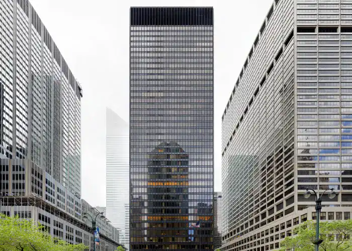

Seagram Building
Le Seagram Building, situé à New York, est un gratte-ciel emblématique conçu par l'architecte allemand Mies van der Rohe en collaboration avec l'architecte américain Philip Johnson. Érigé entre 1954 et 1958, il est un chef-d'œuvre du modernisme architectural. Ce bâtiment de verre et d'acier est caractérisé par sa façade minimaliste et son utilisation novatrice de matériaux. Le Seagram Building est reconnu pour son élégance intemporelle et son influence significative sur l'architecture de bureau moderne. L'association de Johnson avec le Seagram Building souligne son rôle important dans la promotion du modernisme aux États-Unis.

Images du Seagram Building